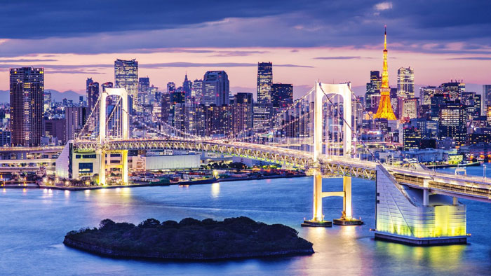
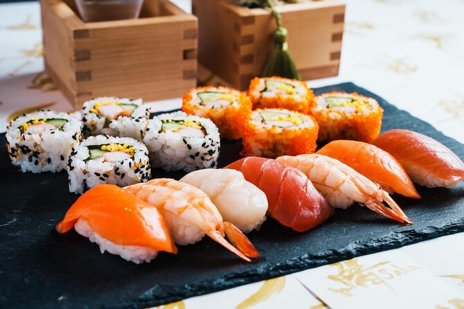

Визначні пам'ятки

Перехрестя Сібуя та телевежа Tokyo Skytree залишили нас без слів. Масштаби цього мегаполіса вражають.
Кухня та гастрономія 🍣

Свіжі суші, рамен зі справжнім наваристим бульйоном і солодощі з матчею — японська кухня стала для нас справжнім відкриттям.
Культура та традиції
Поряд із неоновими хмарочосами спокійно існують стародавні храми, де панує абсолютна тиша. Цей баланс робить Японію унікальною.
Особисті історії
Поїздка на надшвидкісному потязі Сінкансен була схожа на політ у космос — настільки це швидко і безшумно.